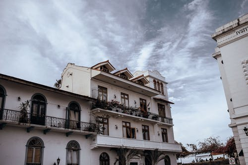

Traveling is one of my favorite hobbies. I love visiting friends and family, seeing historical sites, and experiencing new cultures. Throughout my life I have been blessed to travel to a variety of different places around the world. To date, I have been to 2 continents, 9 countries, and dozens of states.
During my travels, I love to learn about history and art. I love museums and “tourist” traps. Every time you travel a whole new world is
opened and a whole new way of thinking. In order to be a productive citizen of the world, you need to learn about what there is in the world
and appreciate the life other people live. I can’t believe how diverse the world is and what it has to offer.
One of my personal hobbies is to visit wineries. Living in NC, there are now 100 wineries in the state to visit.
They range from large, corporate vineyards to quaint, backwoods wineries run by families and distributed only at the winery.
I am by no means an expert; I simply note what I like and observe my surroundings and the business.
I'm quite practical when packing, Put heavier items on the bottom of my suitcase. This includes shoes (in shoe bags), rolled jeans, and blazers (folded into dry-cleaner bags). Lighter pieces go at the top. I roll my casual clothes specially smaller items and I fold sweaters and delicates items. I always bring an extra bag to keep my clean clothes separate from the dirty ones.
©2020 CarlosAlvarado